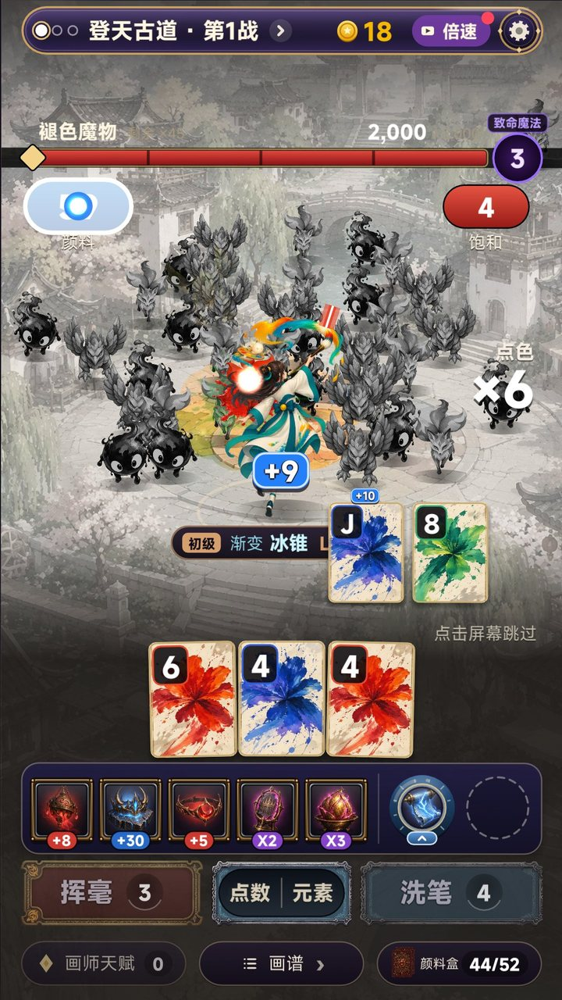
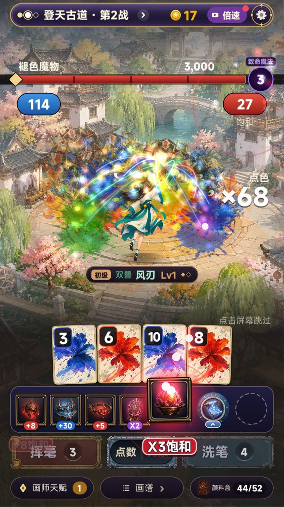
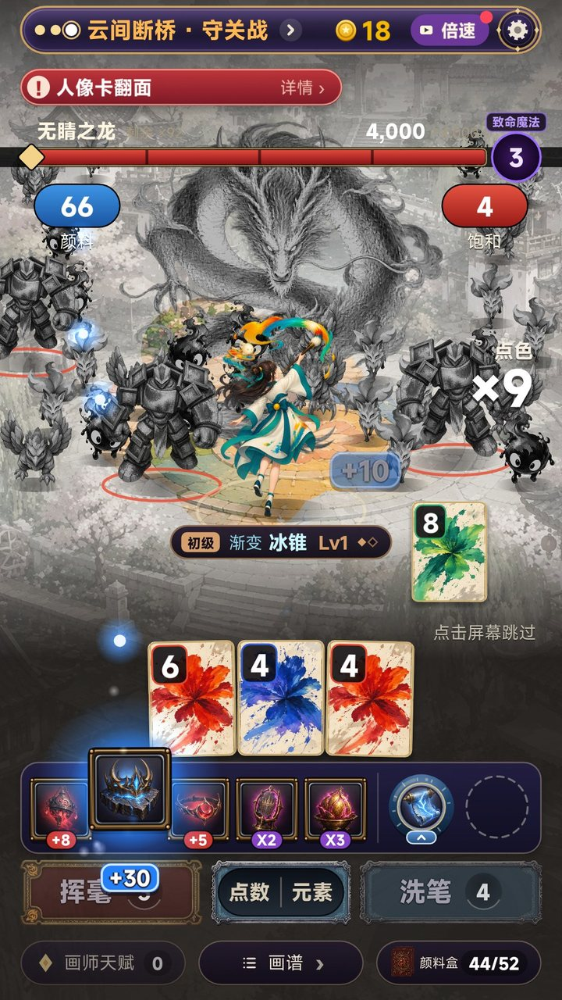
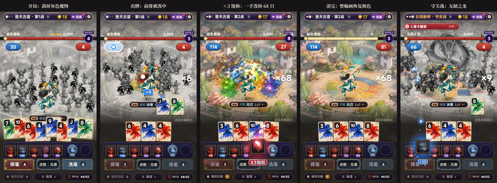
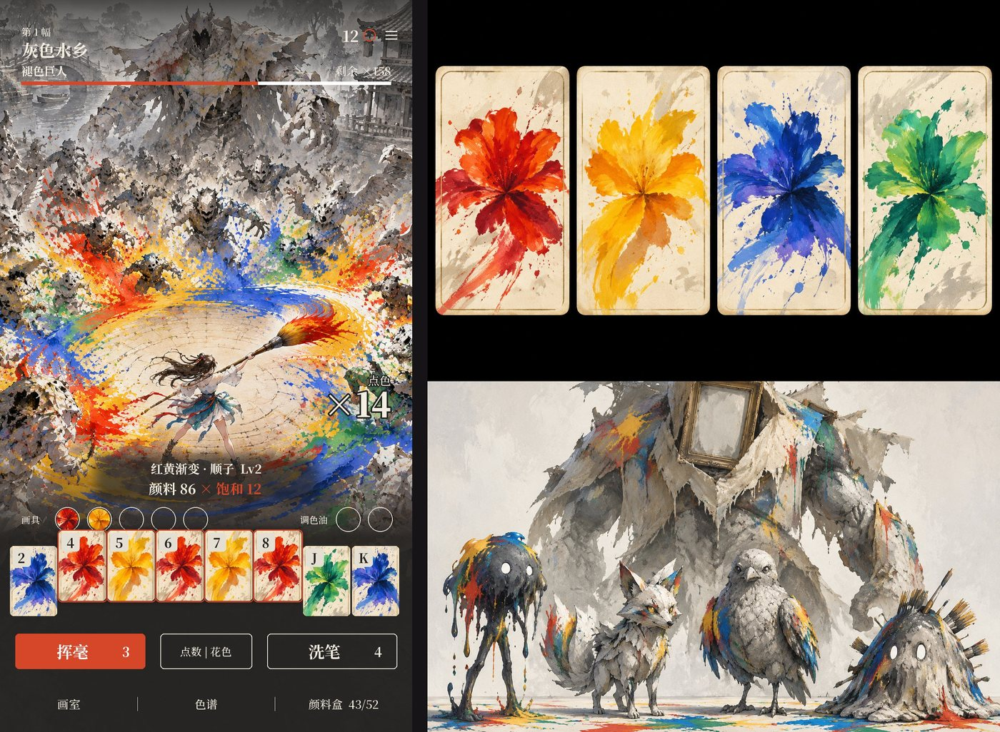

zwluoqi/EmberCards2 里改。厂商 FIRE工作室（507397）。| 实机：一手牌打出去，前排魔物被泼中、碎掉 | 实机：装备触发 ×3 饱和，一手泼掉 68 只 | 实机：守关战，无睛之龙压阵 |
|---|---|---|
 |
 |
 |
实机录屏（32 秒，游戏自己出牌）：
| 看什么 | 内容 |
|---|---|
| 和玩法的搭配 | 一代是「元素组合成魔法」，二代是「颜料组合成画法」，结构一模一样，而且更直观：打出去的颜色就是牌的颜色 |
| 割草的读法 | 灰色魔物被泼中就变回彩色再碎掉，一眼就知道倒下了谁。屏幕越来越彩色，代表你打得越来越好 |
| 需求 | 画画 995 万关注；画师 446 万；调色 327 万。画中世界 49 万（9.4 分）、倾听画语 29 万（9.4 分）、名画展 22 万（9.6 分）。制造游戏《从砸矿开始制取颜料吧》11-11 在热门榜第 13 |
| 新 | TapTap 的割草和肉鸽里没有人做「颜色」 |
| 画风 | 水粉手绘、彩色 vs 灰色，和 TapTap 主流的国风、二次元都拉得开 |
| 花色 | 颜料 | 元素 | 泼中的表现 |
|---|---|---|---|
| 红 | 朱砂 | 火 | 燃烧的红色泼溅 |
| 黄 | 藤黄 | 雷 | 金色闪光、跳到旁边的魔物 |
| 蓝 | 群青 | 冰 | 结霜、碎成冰晶 |
| 绿 | 石绿 | 木 | 藤蔓缠住、开出花 |
混色出牌时，泼出去的颜色就是混出来的颜色，元素也跟着混：红 + 黄 是熔金，蓝 + 绿 是潮汐。这只是表现和命名，规则不变。
| 牌型 | 画法 | 奇幻表现 | 先打谁 |
|---|---|---|---|
| 高牌 | 一笔 | 一道颜料箭 | 正前方一只 |
| 对子 | 叠色 | 两道笔触 | 正前方两只 |
| 两对 | 双叠 | 两道交叉笔触 | 前排一小片 |
| 三条 | 三叠 | 画出三把颜料剑从天而降 | 前排三处 |
| 顺子 | 渐变 | 一卷长卷从左到右展开，扫过一排 | 一整圈 |
| 同花 | 泼彩 | 一大片同色泼墨，化成火海、冰原、雷池或藤海 | 内两圈 |
| 葫芦 | 撞色 | 画出一只颜料猛虎扑进魔物堆 | 一大块 |
| 四条 | 四色泼墨 | 墨雨从天而降砸出大坑 | 落点一圈 |
| 同花顺 | 画龙点睛 | 一条颜料画成的龙飞过全场（实机已做） | 全屏 |
| 五条 / 同花葫芦 / 同花五条 | 五彩 / 满园春色 / 五彩斑斓 | 整幅画瞬间恢复颜色 | 全屏 |
不管用哪种画法，杀几只只由伤害决定（一波的血量 = 一代这一关的目标分），画法只决定先打谁、画面长什么样。
| 一代 | 二代 | 例子 |
|---|---|---|
| 小丑牌（装备） | 画具 | 狼毫笔（+颜料）、金箔（×饱和）、镇纸（留住一张牌）；「重新触发」= 重描 |
| 塔罗（改牌） | 颜料瓶 | 一代把牌变成某花色的塔罗，二代就是「给这张牌换颜料」，搭配天然 |
| 星球（升级牌型） | 画谱 | 升级某种画法 |
| 局外成长 | 画册 | 每清完一卷画，整卷恢复彩色，收进画册（收集 8 卷彩色原画） |
| 类型 | 设计 | 实机表现 |
|---|---|---|
| 纸狐 | 折纸狐狸，三条纸尾 | 灰色；被泼中变回橙色再碎掉 |
| 墨魇 | 一团墨水小怪，大白眼 | 黑色最显眼，数量最多 |
| 石雀 | 长苔的石头雀 | 灰色带翅膀 |
| 精英 · 画框傀儡 | 画框和陶土堆成的巨人，胸口朱印 | 大一倍半，脚下红圈 |
| 守关 · 无睛之龙 | 半褪色的盘龙，眼睛没画 | 压在最后几圈正中；打完整只变回彩色 |
每卷画 3 种小怪 + 1 种精英 + 1 只守关灵兽：8 卷共 24 + 8 + 8 = 40 张。素材规格同第 3.2 节。

devtools/record.sh shot paint_hit 1080x1920 out.png -- -dv-new -dv-nosave -rec-at=2.4（-rec-blind=boss 看守关战）。| 文件 | 改动 |
|---|---|
scripts/ui/horde.lua（新，约 350 行） |
整屏地图（灰 + 恢复颜色的地面）；6 圈站位、同屏 36 只、补位；按伤害逐只泼中（计分途中用「颜料 × 饱和」的实时乘积，一路涨到最终伤害）；泼溅、笔触、碎裂、地面回彩；守关的龙；大牌型召唤画龙；本手「点色 ×N」 |
scripts/ui/screens/round.lua |
加 PAINT 开关：战斗界面画 horde，一代的施法特效、开场卡片、敌人台词不放；血条挪到顶栏下面 |
scripts/ui/magicboard.lua |
阵眼不再画一代的法阵；血条名字改成「褪色魔物 / 无睛之龙」；画法牌移到主角脚下 |
scripts/ui/cardart.lua |
牌面底图换成四种颜料，人像牌的骑士不画 |
scripts/ui/words.lua |
再叠一层用词：颜料 / 饱和 / 挥毫 / 洗笔 / 颜料盒 / 画谱 / 一笔 / 叠色 / 渐变 / 泼彩 / 画龙点睛…… |
scripts/main.lua |
打开 PAINT_HORDE |
assets/image/paint/（新） |
地图（彩色 + 灰色）、主角、3 种小怪 + 精英 + 守关（各一张彩色 + 一张灰色）、4 种泼溅、画龙、4 种牌面 |
scripts/game/（规则引擎） |
一行没动 |
devtools/v2/gen_concept.py（pz_* 任务），同一套画风前缀。devtools/v2 里的处理），所以「褪色 → 回彩」不用画两遍。| 项 | 现状 | 要做的 |
|---|---|---|
| 装备栏、按钮、顶栏、底栏 | 还是一代的紫金样式和图标 | 换成宣纸 + 墨线 + 单一朱砂强调色（v4 / v5 定下的克制 UI） |
| 画法牌上的小字 | 还写着一代的「冰锥」这类法术名 | 换成画法名 |
| 不同画法的形状 | 现在所有牌型都是「从内圈往外泼」，只有大牌型多一条画龙 | 按 2.3 节的表做 12 种：长卷、颜料剑、猛虎、墨雨…… |
| 元素表现 | 泼溅只分颜色 | 火、雷、冰、木四套粒子 |
| 魔物动作 | 呼吸、补位、被泼中掀飞；没有攻击动作 | 收圈逼近（剩余出牌次数），失败时扑上来 |
| 别的界面 | 选关、商店、结算、营地、剧情都还是一代 | 换皮 |
| 音效 | 用的是一代的 | 泼溅、笔刷、回彩的声音 |
| 阶段 | 内容 | 过关标准 |
|---|---|---|
| 切片（第 1 卷完整） | 第 4 节全部做完；第 1 卷三波 + 守关；新建或复用 Maker 应用，出测试二维码 | 你扫码在真机上玩，认可「泼彩割草」的爽感；真机 36 只同屏帧率稳定；同种子回放测试通过 |
| 正式制作 | 8 卷画的美术（40 只敌人 + 8 张地图）、画具图标、文字换皮、音频 | bot 通关率和一代持平（±2%） |
| 预约 | 商店素材（第 0 帧就是灰色世界被一手牌泼回彩色）、提审 | 走一代的提审清单 |
目标：首页点击率 ≥ 15%（一代约 8%），次留 ≥ 20%，人均 ≥ 60 分钟。
| 版本 | 题材 | 结果 |
|---|---|---|
| v5 | 乐队 / 调色 / 烟花（概念图） | 你选了调色 → v6 |
| v4 | 新怪谈 / 深海 / 地府 | 和玩法不搭、画风低 |
| v3 | 仙门降妖 | 题材不新、页游感 |
| v2 / v1 | 武侠 / 末日 | — |
